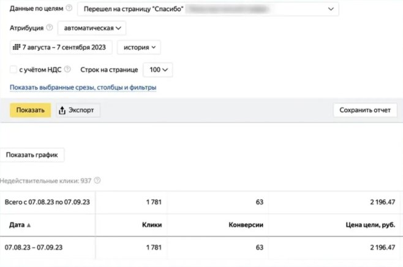

Онлайн-школа психологии: 63 заявки на курс
- Задача
- Заявки на курс по психологии стоимостью около 30 000 ₽. Лендинг новый, статистики в Метрике нет.
- Что сделано
- Подобрано 9 масок запросов, в KeyCollector собрано около 3 000 фраз, нецелевые отсечены. Запущены поисковые кампании, показы интересующимся дополнительным образованием и ретаргетинг на посетителей сайта. Со второй недели стоимость заявки вышла на плановую.
- 138 348 ₽ бюджет
- 1 781 клик
- 63 заявки
- 2 196 ₽ за заявку
Дальше по воронке: 42 бесплатные сессии, 13 оплат курса, 8 продлений.
Полный кейс